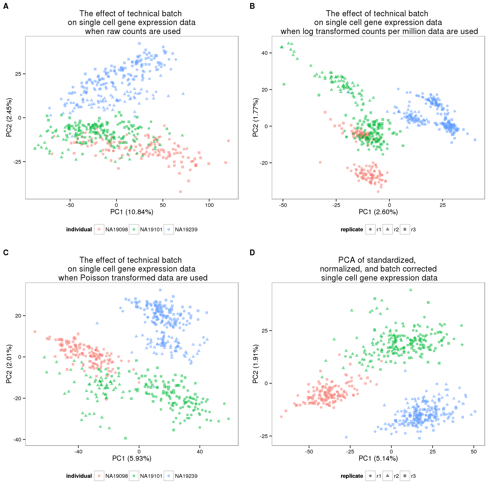

Last updated: 2016-04-24
Code version: 74f30e4e4b6c6fea3667336da91b01fb5603564f
library("ggplot2")
library("cowplot")
theme_set(theme_bw(base_size = 12))
source("functions.R")This file performs principal components analysis (PCA) and displays the results for the data at each stage of our data transformation pipeline. Furthermore, it quantifies and tests the PCA results using pca-utils (commit 8540ff2). The methodology is described in Worley et al., 2013. Briefly, the differences between samples are calculated using the squared Mahalanobis distance. The distances are then scaled so that the hypothesis test that the samples from two groups come from separate distributions can be computed with an F-test.
Input filtered annotation.
anno_filter <- read.table("../data/annotation-filter.txt", header = TRUE,
stringsAsFactors = FALSE)
head(anno_filter) individual replicate well batch sample_id
1 NA19098 r1 A01 NA19098.r1 NA19098.r1.A01
2 NA19098 r1 A02 NA19098.r1 NA19098.r1.A02
3 NA19098 r1 A04 NA19098.r1 NA19098.r1.A04
4 NA19098 r1 A05 NA19098.r1 NA19098.r1.A05
5 NA19098 r1 A06 NA19098.r1 NA19098.r1.A06
6 NA19098 r1 A07 NA19098.r1 NA19098.r1.A07Input filtered molecule counts.
molecules_filter <- read.table("../data/molecules-filter.txt", header = TRUE,
stringsAsFactors = FALSE)
stopifnot(ncol(molecules_filter) == nrow(anno_filter),
colnames(molecules_filter) == anno_filter$sample_id)Input standardized molecule counts.
molecules_cpm <- read.table("../data/molecules-cpm.txt", header = TRUE,
stringsAsFactors = FALSE)
stopifnot(ncol(molecules_cpm) == nrow(anno_filter),
colnames(molecules_cpm) == anno_filter$sample_id)Input Poisson GLM transformed molecule counts per million.
molecules_cpm_trans <- read.table("../data/molecules-cpm-trans.txt", header = TRUE,
stringsAsFactors = FALSE)
stopifnot(ncol(molecules_cpm_trans) == nrow(anno_filter),
colnames(molecules_cpm_trans) == anno_filter$sample_id)Input final batch-corrected molecule counts per million.
molecules_final <- read.table("../data/molecules-final.txt", header = TRUE,
stringsAsFactors = FALSE)
stopifnot(ncol(molecules_final) == nrow(anno_filter),
colnames(molecules_final) == anno_filter$sample_id)pca_molecules_filter <- run_pca(molecules_filter)
pca_molecules_filter_plot <- plot_pca(pca_molecules_filter$PCs,
explained = pca_molecules_filter$explained,
metadata = anno_filter, color = "individual",
shape = "replicate", alpha = 0.5, size = 2.2) +
labs(title = "Counts")pca_molecules_filter_out <- data.frame(Obs.id = 1:nrow(anno_filter),
Obs.batch = anno_filter$batch,
pca_molecules_filter$PCs[, 1:2])
write.table(pca_molecules_filter_out,
file = "../data/pca-molecules-filter.txt",
quote = FALSE, sep = "\t", row.names = FALSE)pca-distances -i ../data/pca-molecules-filter.txt NA19098.r3 NA19101.r1 NA19101.r2 NA19101.r3 NA19239.r1 NA19239.r2 NA19239.r3
NA19098.r1 3.533561e+01 2.795329e+01 3.108176e+01 3.685457e+01 3.662411e+01 3.119577e+01 4.383286e+01
NA19098.r3 6.325114e+01 6.619283e+01 7.215802e+01 6.176294e+01 6.277506e+01 6.288494e+01
NA19101.r1 7.570174e+00 8.906888e+00 3.210637e+01 1.794815e+01 4.380363e+01
NA19101.r2 9.531213e+00 3.967157e+01 2.543646e+01 5.137277e+01
NA19101.r3 3.581286e+01 2.135155e+01 4.770952e+01
NA19239.r1 1.452473e+01 1.189914e+01
NA19239.r2 2.641617e+01pca-dendrogram -i ../data/pca-molecules-filter.txt
+-----NA19101.r1
+----------------------|3.5e-03
| +-------NA19101.r3
+--------------------------------------|0
| | +--------------------NA19098.r3
| | |0
| +--------------| +-------NA19098.r1
|0 +---------|6.9e-07
| +--------NA19101.r2
|
| +--------------------------------------NA19239.r2
| |0
+-----------------------------------------------------------| +-------------------NA19239.r1
+-----------------|0
+------------------NA19239.r3
pca_molecules_cpm <- run_pca(molecules_cpm)
pca_molecules_cpm_plot <- plot_pca(pca_molecules_cpm$PCs,
explained = pca_molecules_cpm$explained,
metadata = anno_filter, color = "individual",
shape = "replicate", alpha = 0.5, size = 2.2) +
labs(title = "Counts per million (log)")pca_molecules_cpm_out <- data.frame(Obs.id = 1:nrow(anno_filter),
Obs.batch = anno_filter$batch,
pca_molecules_cpm$PCs[, 1:2])
write.table(pca_molecules_cpm_out,
file = "../data/pca-molecules-cpm.txt",
quote = FALSE, sep = "\t", row.names = FALSE)pca-distances -i ../data/pca-molecules-cpm.txt NA19098.r3 NA19101.r1 NA19101.r2 NA19101.r3 NA19239.r1 NA19239.r2 NA19239.r3
NA19098.r1 2.283127e+01 1.934100e+01 5.296175e+01 2.764144e+01 4.969837e+01 3.699837e+01 4.594807e+01
NA19098.r3 5.978405e+00 3.026961e+01 8.082123e+00 3.866189e+01 2.588141e+01 4.246380e+01
NA19101.r1 3.508682e+01 8.325224e+00 3.575672e+01 2.257645e+01 3.777460e+01
NA19101.r2 2.848375e+01 4.631674e+01 3.973253e+01 5.806423e+01
NA19101.r3 3.087511e+01 1.850056e+01 3.614705e+01
NA19239.r1 1.323738e+01 1.539228e+01
NA19239.r2 1.869540e+01pca-dendrogram -i ../data/pca-molecules-cpm.txt
+-------------------------------NA19239.r1
+-----------------------------------------------------------|0
| | +-------------------NA19239.r2
| +----------------|0
|0 +-----------------NA19239.r3
|
| +--------------------------------------------------NA19098.r1
| |0
+--------------------------------------| +----------------------------------------NA19101.r2
+-----------------|0
| +-------------------NA19101.r3
+----------------|0
| +------NA19098.r3
+--------|7.2e-10
+-----NA19101.r1
pca_molecules_cpm_trans <- run_pca(molecules_cpm_trans)
pca_molecules_cpm_trans_plot <- plot_pca(pca_molecules_cpm_trans$PCs,
explained = pca_molecules_cpm_trans$explained,
metadata = anno_filter, color = "individual",
shape = "replicate", alpha = 0.5, size = 2.2) +
labs(title = "Poisson transformation")pca_molecules_cpm_trans_out <- data.frame(Obs.id = 1:nrow(anno_filter),
Obs.batch = anno_filter$batch,
pca_molecules_cpm_trans$PCs[, 1:2])
write.table(pca_molecules_cpm_trans_out,
file = "../data/pca-molecules-cpm-trans.txt",
quote = FALSE, sep = "\t", row.names = FALSE)pca-distances -i ../data/pca-molecules-cpm-trans.txt NA19098.r3 NA19101.r1 NA19101.r2 NA19101.r3 NA19239.r1 NA19239.r2 NA19239.r3
NA19098.r1 1.656283e+01 6.146432e+01 1.321773e+01 4.332598e+01 4.827787e+01 4.750276e+01 4.949364e+01
NA19098.r3 7.802604e+01 2.497308e+01 5.987233e+01 6.155863e+01 6.265747e+01 6.149072e+01
NA19101.r1 5.731654e+01 1.845042e+01 4.202117e+01 2.987954e+01 4.863510e+01
NA19101.r2 4.062958e+01 5.399017e+01 5.019805e+01 5.661237e+01
NA19101.r3 3.109027e+01 1.973393e+01 3.732732e+01
NA19239.r1 1.225009e+01 6.618308e+00
NA19239.r2 1.885694e+01pca-dendrogram -i ../data/pca-molecules-cpm-trans.txt
+---------------------------------NA19239.r2
|0
+----------------------------------------------------------| +--------NA19239.r1
| +-------------|0
| +-------NA19239.r3
|0
| +------NA19101.r1
| +------------------------------------|0
| | +-----------NA19101.r3
+------------------------------------|0
| +------------------NA19101.r2
| |0
+---------------------| +-----NA19098.r1
+-------|0
+---------NA19098.r3
pca_final <- run_pca(molecules_final)
pca_final_plot <- plot_pca(pca_final$PCs, explained = pca_final$explained,
metadata = anno_filter, color = "individual",
shape = "replicate", alpha = 0.5, size = 2.2) +
labs(title = "Batch corrected")pca_final_out <- data.frame(Obs.id = 1:nrow(anno_filter),
Obs.batch = anno_filter$batch,
pca_final$PCs[, 1:2])
write.table(pca_final_out,
file = "../data/pca-final.txt",
quote = FALSE, sep = "\t", row.names = FALSE)pca-distances -i ../data/pca-final.txt NA19098.r3 NA19101.r1 NA19101.r2 NA19101.r3 NA19239.r1 NA19239.r2 NA19239.r3
NA19098.r1 5.080952e+00 5.435574e+01 3.835040e+01 4.975047e+01 5.613992e+01 5.478609e+01 5.546367e+01
NA19098.r3 5.926557e+01 4.294858e+01 5.468422e+01 6.085990e+01 5.961170e+01 6.014592e+01
NA19101.r1 1.830388e+01 4.708103e+00 3.624496e+01 3.249704e+01 3.706498e+01
NA19101.r2 1.472089e+01 4.267492e+01 3.927972e+01 4.297114e+01
NA19101.r3 3.429283e+01 3.056554e+01 3.498175e+01
NA19239.r1 3.748794e+00 1.333070e+00
NA19239.r2 4.658342e+00pca-dendrogram -i ../data/pca-final.txt
+------------NA19239.r2
|2.4e-08
+-----------------------------------------------------------| +-----NA19239.r1
| +-------|0.32
| +-----NA19239.r3
|0
| +------NA19098.r1
| +-------------------------------------|0.02
| | +-------NA19098.r3
+---------------------------------------|0
| +--------------NA19101.r2
| |4.3e-11
+---------------------------| +------NA19101.r1
+---------|7.7e-03
+--------NA19101.r3
plot_grid(pca_molecules_filter_plot + theme(legend.position = "none"),
pca_molecules_cpm_plot + theme(legend.position = "none"),
pca_molecules_cpm_trans_plot + theme(legend.position = "none"),
pca_final_plot + theme(legend.position = "none"),
labels = LETTERS[1:4])
sessionInfo()R version 3.2.0 (2015-04-16)
Platform: x86_64-unknown-linux-gnu (64-bit)
locale:
[1] LC_CTYPE=en_US.UTF-8 LC_NUMERIC=C
[3] LC_TIME=en_US.UTF-8 LC_COLLATE=en_US.UTF-8
[5] LC_MONETARY=en_US.UTF-8 LC_MESSAGES=en_US.UTF-8
[7] LC_PAPER=en_US.UTF-8 LC_NAME=C
[9] LC_ADDRESS=C LC_TELEPHONE=C
[11] LC_MEASUREMENT=en_US.UTF-8 LC_IDENTIFICATION=C
attached base packages:
[1] stats graphics grDevices utils datasets methods base
other attached packages:
[1] testit_0.4 cowplot_0.3.1 ggplot2_1.0.1 knitr_1.10.5
loaded via a namespace (and not attached):
[1] Rcpp_0.12.0 magrittr_1.5 MASS_7.3-40 munsell_0.4.2
[5] colorspace_1.2-6 stringr_1.0.0 httr_0.6.1 plyr_1.8.3
[9] tools_3.2.0 grid_3.2.0 gtable_0.1.2 htmltools_0.2.6
[13] yaml_2.1.13 digest_0.6.8 reshape2_1.4.1 formatR_1.2
[17] bitops_1.0-6 RCurl_1.95-4.6 evaluate_0.7 rmarkdown_0.6.1
[21] labeling_0.3 stringi_0.4-1 scales_0.2.4 proto_0.3-10